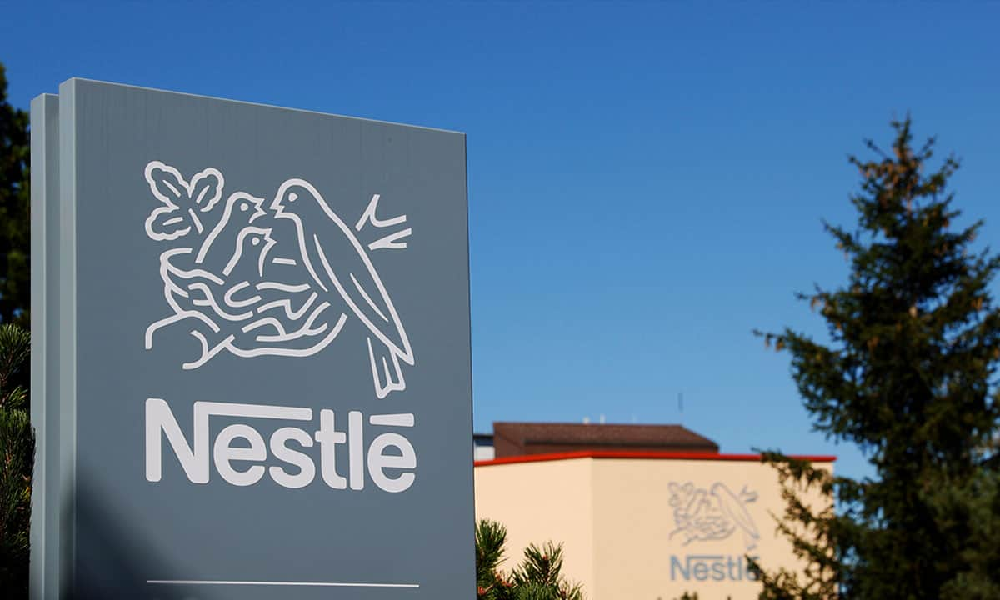
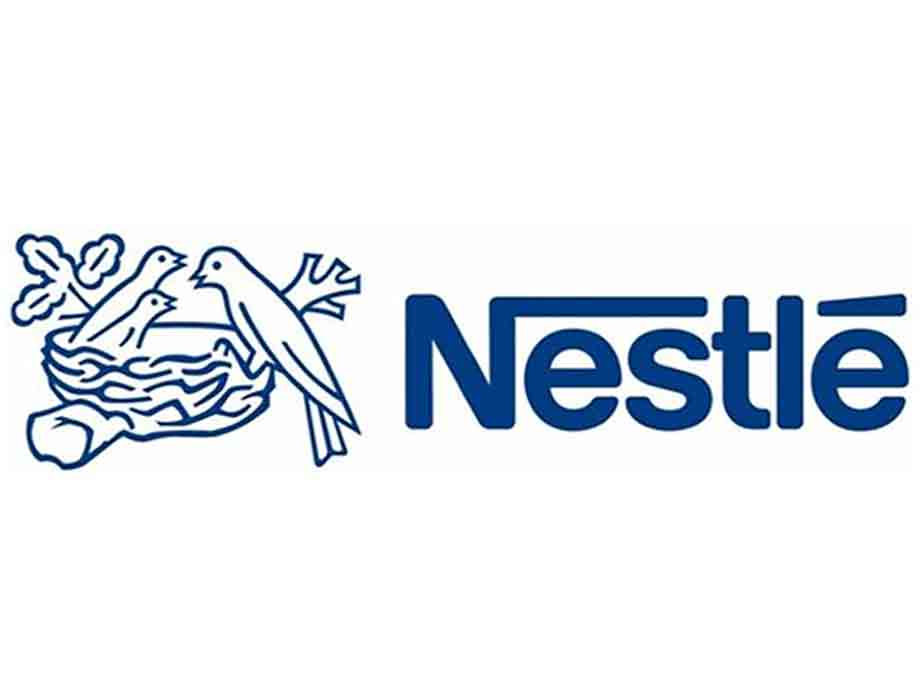
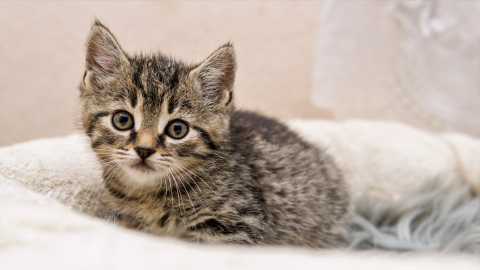

Actividad 1
La Actividad 1 consistió en una exposición en equipo, realizada por cinco integrantes, sobre el framework Bootstrap. El objetivo fue explicar los principales componentes y ventajas de utilizar Bootstrap para el desarrollo de páginas web de manera eficiente y responsiva. Para presentar el contenido de manera clara y visual, se utilizó Canva para crear diapositivas que facilitaban la comprensión de los conceptos. A través de la exposición, quisimos destacar cómo Bootstrap permite agilizar el proceso de diseño web, utilizando su sistema de rejilla, componentes predefinidos y personalización mediante clases CSS. La actividad no solo permitió conocer en detalle el uso de este framework, sino también trabajar en equipo para transmitir la información de forma efectiva.
Actividad

Actividad 2a
La Actividad 2 se dividió en dos partes, la primera parte consistió en la creación de una página web básica utilizando Visual Studio Code, cuyo objetivo era desarrollar un sitio para una empresa de nuestra elección. En mi caso, elegí a Néstle. La página contenía información sobre la empresa, imágenes representativas de sus productos y una liga que redirigía a la página oficial de Néstle. Este ejercicio me permitió aplicar los conocimientos adquiridos sobre HTML y estructura básica de páginas web, enfocándome en la disposición de los elementos y el uso adecuado de etiquetas para organizar la información de manera clara y accesible.
Actividad

Actividad 2b
La siguiente actividad fue complementaria a la anterior, ya que se basó en la misma empresa (Néstle) y consistió en crear una página web más elaborada. En esta ocasión, se debía incluir un encabezado, contenido organizado en columnas y un pie de página. La página web contenía imágenes representativas, enlaces hacia otras secciones relevantes y un diseño más estructurado utilizando columnas para organizar mejor la información. Esta actividad me permitió profundizar en el uso de HTML y CSS para crear un diseño más complejo y funcional, mejorando la presentación y accesibilidad del contenido dentro de la página web.
Actividad

Actividad 3
La Actividad 3 consistió en crear una página web utilizando HTML y CSS sobre mi hobby favorito. En mi caso, elegí el tema de los viajes, y la página fue diseñada como un blog, donde se incluyeron diferentes saltos de página para organizar los contenidos de manera dinámica. Utilicé imágenes relacionadas con los destinos, experiencias y tips de viaje, y me enfoqué en ser lo más creativa posible, siempre asegurándome de incluir los elementos esenciales como el encabezado, el contenido y el pie de página. Esta actividad me permitió explorar la creatividad en el diseño web, al mismo tiempo que reforzaba el uso de técnicas de estructuración y estilo con HTML y CSS.
Actividad
Actividad 5
La Actividad 5 tuvo como objetivo practicar el uso de Bootstrap para crear una página de inicio (homepage) aplicando diferentes combinaciones de columnas. Durante esta actividad, se trabajaron diversos layouts, como 3 columnas iguales, columnas con tamaños diferentes (8 y 4 en formato md), columnas anidadas dentro de una columna más grande (8), y mezclas de columnas utilizando distintos tamaños de pantalla (sm, md, lg). Para poner en práctica estos conceptos, decidí usar el tema de los gatos para diseñar la homepage, cumpliendo con los requisitos solicitados y experimentando con las distintas opciones de diseño que ofrece Bootstrap. Esta actividad me permitió afianzar el manejo de rejillas y adaptabilidad en el diseño web.
Actividad

Actividad 6
Explicación sobre la actividad 6
Actividad

Examen
El examen final consistió en desarrollar una página web para un "botanero" proporcionado por el maestro, llamado "Nido del Craving". Se nos dieron cuatro imágenes, incluyendo el logo, como base para el diseño. La página debía incluir los siguientes elementos:
- Un encabezado con el logo y una barra de navegación funcional.
- El contenido principal dentro de un "container" centrado, que mostraba información clave como promociones, ubicación e instalaciones del lugar.
- Un carousel de imágenes para resaltar visualmente las instalaciones o promociones.
- Un pie de página que incluía el autor de la página y el año de realización.
Esto nos permitió integrar todos los conocimientos adquiridos durante el curso, enfocándonos en la estructura, el diseño responsivo y la estética para presentar un sitio web funcional y atractivo.
Examen

Proyecto Final
Explicación sobre el proyecto final
Actividad